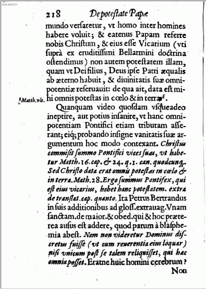
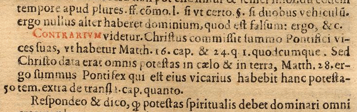

http://biblelight.net |
Does the Pope Claim to be God?
Mysterious Quote Regarding Pope Found!
This may be one of the more common citations found on the web regarding papal claims, but until now it has been cloaked in dense obscurity, the original documents hidden from attempts at discovery by a garbled and incomplete reference:
"The Pope and God are the same, so he has all power in Heaven and earth." Pope Pius V, quoted in Barclay, Chapter XXVII, p. 218, "Cities Petrus Bertanous".
Well, a bit of determined research has finally cracked this mystery. A major clue: that should read "Barclay, Chapter XXVII, p. 218, who cites Petrus Bertrandus." And what of Pius V? Well he is mentioned on page 219, not 218.
The book by Barclay referred to is DE POTESTATE PAPAE: An & Quatenus in Reges & Principes Seculares Ius & Imperium Habiet by Guil. Barclaii I. C., Liber posthumus. Reddite Caesari quae sunt Caesaris, & quae Dei Deo. Anno M. D.C. IX. [1609], Online at Bayerische StaatsBibliothek, Bavarian State Library. Another copy online at Google books.
The author, William Barclay (1546-1608), was a Scottish Roman Catholic, a lawyer and a scholar, who strongly opposed papal claims to temporal authority over kings.
The citation refers to Chapter XXVII [27], page 218. (Online at Bayerische StaatsBibliothek, Bavarian State Library) shown below:
|  |
In the second paragraph, Quanquam video quosdam usqueadeo ineptire, aut potius insanire, ut hanc
omnipotentium Pontifici etiam tributam asserant; eiq; probando insigne
vanitatis suae argumentum hoc mondo contexant. Then, as evidence there is a quote from the gloss by French canonist Petrus Bertrandus (Peter Bertrand 1280-1349) for the last sentence of Unam Sanctam [published in Corpus Juris Canonici, Extravagantes Communes, book I, title 8, chapter I., (De majoritate et obedientia), which begins at column 202], Bull of Pope Boniface VIII promulgated November 18, 1302: [Contrarium videtur.] Christus commissit summo Pontifici vices suas, (ut habetur Matth. 16. cap. et 24. q I. quodcumque.) Sed Christo data erat omnis potestas in caelo et in terra (Matth. 28.) ergo summus Pontifex qui est ejus vicarius habebit hanc potestatem. extra de translat. cap. quanto. (See column 212.) Christ entrusted his office to the chief Pontiff; (Mat 16:18, Mat 24:45) but all power in heaven and in earth had been given to Christ; (Mat. 28:18) therefore the chief Pontiff, who is his vicar, will have this power. (Translation source) [Extravagantes, Decretal. Greg. IX. de Transl. lib. i. tit. 7. c. 3. 'Quanto personam,' Pope Innocent III.] |

Ita Petrus Bertrandus in suis additionibus ad gloss extravag. Unam Sanctum. de maior. & obed. qui & hoc praeterea ausus est addere, quod parum a blasphemia abest. Nam non videretur Dominus discretus fuisse (ut cum reverentia eius loquar) nisi unicum post se talem reliquisset, qui haec omnia posset.
So Pierre Bertrand in his gloss for Unam Sanctum had the boldness to add this, which is little removed from blasphemy. For our Lord would not appear to have been discreet (that with His reverence I may so speak), if he had not left behind one who could be all these things.
Peter Bertrand's name appears at the end of his gloss on Unam Sanctam at the bottom of column 214.
Pope Boniface VIII in Unam Sanctam states:
Igitur ecclesiae unius et unicae unum corpus, unum caput, non duo capita, quasi monstrum, Christus videlicet et Christi vicarius, Petrus, Petrique successor, dicente Domino ipsi Petro: ... Quicunque igitur huic potestati a Deo sic ordinatae resistit, Dei ordinationi resistit, nisi duo, sicut Manichaeus, fingat esse principia, quod falsum et haereticum judicamus, quia, testante Moyse, non in principiis, sed in principio coelum Deus creavit et terram. Porro subesse Romano Pontifici omni humanae creaturae declaramus dicimus, definimus et pronunciamus omnino esse de necessitate salutis.
Therefore, of the one and only Church there is one body and one head, not two heads like a monster; that is, Christ and the Vicar of Christ, Peter and the successor of Peter, ... Therefore whoever resists this power thus ordained by God, resists the ordinance of God [Rom 13:2], unless he invent like Manicheus two beginnings, which is false and judged by us heretical, since according to the testimony of Moses, it is not in the beginnings but in the beginning that God created heaven and earth [Gen 1:1]. Furthermore, we declare, we proclaim, we define that it is absolutely necessary for salvation that every human creature be subject to the Roman Pontiff. (Unam Sanctam in English and Latin)
Pope Pius V in his bull Regnans in Excelsis, deposing England's Queen Elisabeth in 1570, made that argument in the following claim:
Regnans in excelsis, cui data est omnis in coelo et in terra potestas, unum sanctam Catholicam et apostolicam ecclesiam, extra quam nulla est salus, uni soli in terris, videlicet apostolorum principi Petro, Petrique successori Romano pontifici, in potestatis plenitudine tradidit gubernandam. Hunc unum super omnes gentes, et omnia regna principem constituit, qui evellat, destruat, dissipet, disperdat, plantet, et aedificet, ut fidelem populum mutuae charitatis nexu constrictum in unitate spiritus contineat, salvumque et incolumem suo exhibeat salvatori. (Source)
He that reigneth on high, to whom is given all power in heaven and earth, has committed one holy Catholic and apostolic Church, outside of which there is no salvation, to one alone upon earth, namely to Peter, the first of the apostles, and to Peter's successor, the pope of Rome, to be by him governed in fullness of power. Him alone He has made ruler over all peoples and kingdoms, to pull up, destroy, scatter, disperse, plant and build, so that he may preserve His faithful people (knit together with the girdle of charity) in the unity of the Spirit and present them safe and spotless to their Saviour. (Translation source)
So, there you have it. The Pope and God are but one head, not two. The Pope acts on earth with the fullness of the power of God in heaven as His vicar. That is blasphemy.
Dominum Deum
Nostrum Papam
Our Lord God the Pope
DOCUMENTED
|
http://biblelight.net |